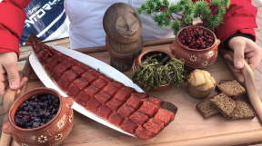
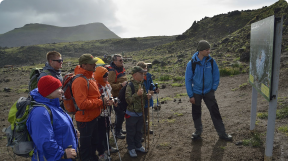
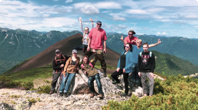

КАМЧАТКА
ТУР
Путешествие на край света
начинается
Ваша мечта осуществилась, вы приняли решение,
и вам предстоит путешествие на край свет.
Этот маршрут лучший вариант для тех, кто хочет ощутить, как живет самая
молодая земля нашей планеты, много увидеть, испытать на себе и полюбить
увезти целый рюкзак незабываемых чувств и впечатлений. Каждый день вы
будете выезжать на радиальные маршруты, а прожтвать в комфортабельных
двухместных номерах.
Сложность |
Период |
Длительность |
Проживание |
Для семейного отдыха |
Июль-август |
7 дней/ 6 ночей |
Отель, без палаток |
КАМЧАТКА
Камчатка – земля великолепной заснеженной
природы, действующих вулканов и диких мест,
где ещё не ступала нога человека.
“Когда мы подлетали к Камчатке, у меня
захватило дух от увиденного. Это за
гранью реальности. Невероятно!”
Максим, @max_max
i
День 1. Прибытие.
Встреча в аэропорту и
размещение
С высоты птичьего полета вы увидите знаменитые «домашние» вулканы – Корякский, Авачинский и Козельский.
У выхода в аэропорту вас встретят с табличкой «ДРИМ ТУР».
По пути в гостиницу сбор средств с членов группы, инструктаж по программе этого дня
(бассейн с термальной водой, шашлык, знакомство с группой, алкоголь, фейерверк не раньше 20:00).
После выезд (вид транспорта зависит от величины группы) на базу отдыха в курортный поселок
Паратунка.
Вечером, после прибытия на Камчатку всех участников (если рейсы разные), общая встреча,
проверка снаряжения, обсуждение программы завтрашнего дня.
i
День 2. Вилючинский водопад, вулкан и Верхне-Паратунские
термальные источники
Инструктаж перед поездкой (передвижение и поведение группы в лесу, общение с медведями, форма одежды, ), снаряжение, (взять тару для воды при заезде на Зайкин ключ, купальные принадлежности).
Сбор участников на Роуп Джамп для прыжков с высоты над водопадом. Заранее решаем кто прыгает.
Выезд из отеля в 10.00. Переезд в верховья реки Паратунка к подножию вулкана Вилючинский. Обзорная пешеходная экскурсия к водопаду Вилючинский. Термос с чаем, шоколад. Возвращение назад.
Обед. Купание в Верхне-Паратунских термальных источниках, расположенных на склоне сопки Горячая.
Продолжительность – 6-8 часов. Трансфер в гостиницу.
i
На протяжении маршрута вас ожидает:
|
Аудиосопровождение Новый способ увидеть и услышать,
|

Разнообразное питание Каждый обед мы готовим с |

Безопасность на маршруте Наша команда проводит инструктаж, рассказывает как правильно себя вести, как избежать опасных ситуаций. |

Потрясающие фото Можете не переживать, что не успели сделать фото. Наш фотограф успевает везде и за всеми. У вас будут самые лучшие фото! |
i
День 3. Горные цирки и водопады вулкана Вачкажец
Вачкажец–горный массив и его окрестности, одно из красивейших мест первозданной камчатской природы. Небольшой пеший переход не успеет Вас утомить. А в награду за труд в конце пути открывается великолепный вид на горное озеро в чаше кратера старого потухшего вулкана, обрамленное пиками старых, невысоких гор.
Выезд из гостиницы и переезд около 2 часов. Пеший переход около 5 км.в одну сторону к горным циркам вулкана Вачкажец, осмотр водопада. Обед. Отдых. По прибытию в машину чай с шоколадом! Обратный переход по тому же пути.
Продолжительность: 8 часов. Трансфер в гостиницу.
День 4. Экскурсия к подножию Авачинского вулкана
Инструктаж по поведению группы в горах. Проверка снаряжения.Выезд на автомашине на вулканическое плато (высота 900 м) к подножию Авачинского вулкана (2 часа).
Пешеходная экскурсия к горе Верблюд, представляющую собой вулканическую экструзию. Находится в седловине между Корякским и Авачинским вулканами, относительная высота 100-150 м, ширина - около 100 м и по длине она протягивается на 500 м., состоит из трех сросшихся блоков.
Обед. Поездка в Паратунку с купанием.
Продолжительность – 8 часов. Трансфер в гостиницу.
i
День 5. Морская прогулка к острову Старичков
Инструктаж по поведению группы при передвижении на плавсредствах, приему таблеток от морской болезни.
Выезд на причал. Морская прогулка по Авачинской бухте. Осмотр панорамы города Петропавловска-Камчатского, Авачинской губы и Авачинского залива. Маршрут пролегает мимо бухты Тихая, острова Бабушкин камень, мыса Станицкого, камней «Три брата». Увлекательная возможность донной рыбалки на терпуга, ленка, камбалу у «Трех братьев», мыса Безымянный, у острова Старичков.
Осмотр птичьих базаров - смешанных колонии кайр, моевок и бакланов. Трансфер в гостиницу.
Продолжительность 6 часов.
День 6. Берег Тихого океана, экскурсия по городу
Поездка на берег Тихого океана, в район Халактырского пляжа. Прогулка. Обед в городе. Обзорная экскурсия по г. Петропавловску-Камчатскому с посещением смотровых площадок. Рыбный рынок.
Продолжительность -5 часов. Трансфер в гостиницу.
Дополнительные услуги
Серфинг
Прыжки с высоты над водопадом.
Записываться заранее.
SUP борды
Прыжки с высоты над водопадом.
Записываться заранее.
i
День 7. Вертолетная экскурсия в Долину Гейзеров и кальдеру вулкана Узон / свободный день
Экскурсия проводится в содружестве с «ВИТЯЗЬ-ТРЕВЕЛ», крупнейшим оператором вертолётных туров на Камчатке. Выезд в аэропорт «Витязь –Аэро». К вашим услугам –современный аэропортовый комплекс, включающий в себя удобный зал ожидания, кафетерий, сувенирный магазин.
Перелёт до Долины гейзеров занимает 1 час 10 минут. По пути, при благоприятных условиях, вы осмотрите два действующих вулкана – Карымский и Малый Семячик из окон вертолёта.
Перелёт и посадка в кальдере Узон. Кальдера образовалась в результате обрушения стенок древнего вулкана около 40 тысяч лет назад, на её дне очень ярко проявляется гидротермальная деятельность.Сотни столбов пара вырываются здесь из жёлтых фумарольных полей. Осмотр термальных полей.
Перелёт и посадка в Налычевской долине. Купание в горячих источниках. Здесь же вам предложат обед - горячее, чай и камчатский морс. Трансфер в гостиницу.
Дополнительные услуги
Роуп Джамп
Прыжки с высоты над водопадом.
Записываться заранее.
Ледянки
Прыжки с высоты над водопадом.
Записываться заранее.
i
i
i
День 8. Отъезд с Камчатки. Трансфер в аэропорт
Заезд на рынок, прощальное посещение «медведей», фото на память. Возвращайтесь следующим летом!
i